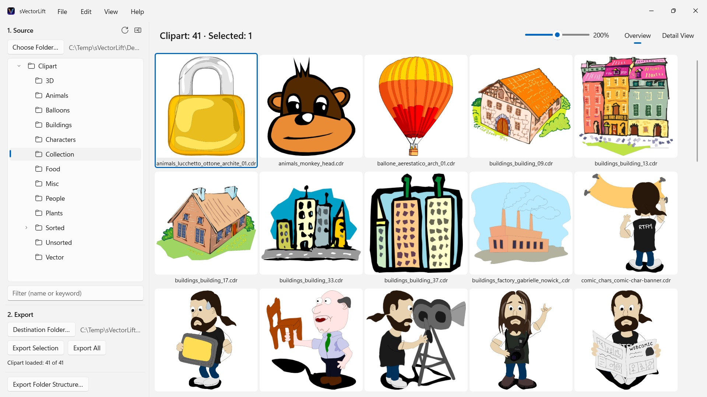
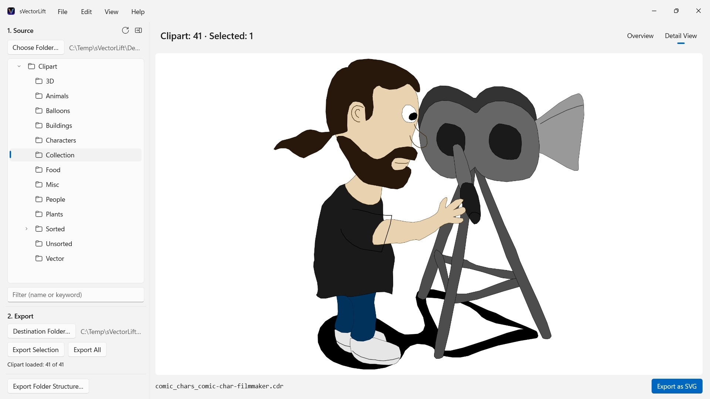

sVectorLift
Opens CorelDRAW 6–9 (.cdr), CMX including CDRX, WMF, CGM, QuickDraw 3D, and SVG
Thousands of vintage clipart images on CorelDRAW CDs – locked in file formats hardly any software opens anymore. sVectorLift lets you browse whole collections at a glance and turns them back into true SVG artwork you can actually use today.
 Watch the film – 3 minutes on YouTube
Watch the film – 3 minutes on YouTube


Somewhere on a shelf sits a CD full of clipart you paid for years ago. The files are still there – but hardly anything on your PC will open them anymore, let alone show you the whole collection at a glance.
Supported languages (25): Deutsch · English · Español · Français · Italiano · Nederlands · Português (Brasil) · Português (Portugal) · Svenska · Norsk · Suomi · Polski · Čeština · Hrvatski · Magyar · Română · Türkçe · Русский · Українська · فارسی · ไทย · 日本語 · 한국어 · 简体中文 · 繁體中文
The app follows the Windows display language.
sVectorLift puts that artwork back to work. It rebuilds each drawing as a true SVG: sharp at any size, editable, and ready to drop straight into Illustrator, Affinity, Inkscape, Figma – or your website. Not merely viewable again. Usable again. That is the lift in the name: vintage vector art, raised to the level of the tools you use today.
WHAT IT OPENS
- CorelDRAW documents (.cdr), versions 6 through 9
- Corel Binary Meta File (.cmx) – including the early CDRX variant that other tools refuse to read
- Windows Metafile (.wmf)
- Computer Graphics Metafile (.cgm)
- QuickDraw 3D Metafiles (.3dm, .3dmf), rendered as an image
- Scalable Vector Graphics (.svg), shown directly
Many files with a .cdr extension are not actually CorelDRAW documents but CMX – which is exactly why the usual converters fail on them. sVectorLift reads both.
sVectorLift is built for clipart libraries: drawings, symbols, illustrations. It is not a page-layout tool and does not aim to reproduce multi-page brochures or print templates.
A REAL VECTOR CONVERSION
This is not a screenshot of a preview thumbnail. sVectorLift parses the actual drawing: paths and Bézier curves, fill colors, gradients, outlines and dash patterns, pattern and texture fills, embedded photos, and text objects. What comes out is genuine vector data you can scale, recolor, and edit – not a picture of a drawing.
Purely raster images are exported as PNG instead, so nothing is lost.
Need a picture instead of vector art? "Export as PNG" and "Export as JPG" render any drawing as an image, SVG files included – at the size you set in Settings.
BROWSE YOUR LIBRARY
- Folder tree for the whole clipart collection, with subfolders
- Grid of sharp vector thumbnails, with a size slider
- Detail view with arrow-key navigation through the folder
- Filter by name or keyword
- Multi-selection like in File Explorer: click, Ctrl+click, Shift+click, selection rectangle, Ctrl+A
- Open a single file straight from File Explorer (Open with, or double-click)
- Recent folders that remember where you left off – subfolder and selected file
- Export a selection or an entire folder in one step
- Convert entire folder structures, subfolders included, in one go – the structure is preserved in the destination folder
- Rename, show in File Explorer, move to the Recycle Bin
- Reorganize your collection with drag and drop onto a folder in the folder tree – following File Explorer's rules, Ctrl to copy, Shift to move, and undoable with Ctrl+Z; to and from File Explorer, too
FAST AND CAREFUL WITH YOUR PC
Thumbnails are rendered only for what you actually see, in the background, and cached. Large folders open immediately instead of freezing while thousands of files are processed.
Everything stays on your PC. No network connections, no accounts, no data collection.
CorelDRAW is a trademark of Corel Corporation. sVectorLift is an independent app and is not affiliated with, or endorsed by, Corel.
- Requires Windows 11 or later
- 24 languages
- Support: SwiftAppsBavaria@gmx.net
- Privacy Policy